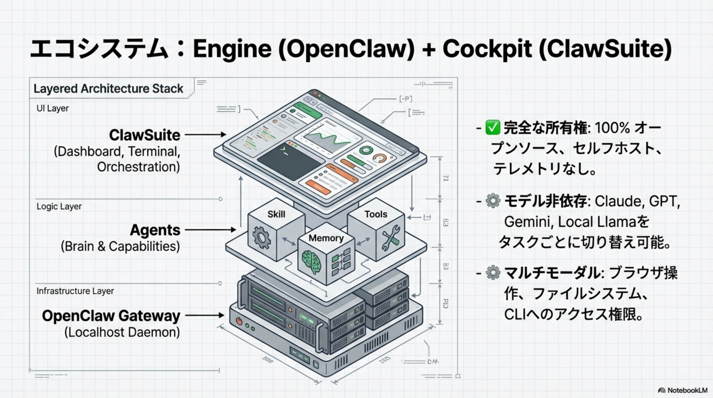
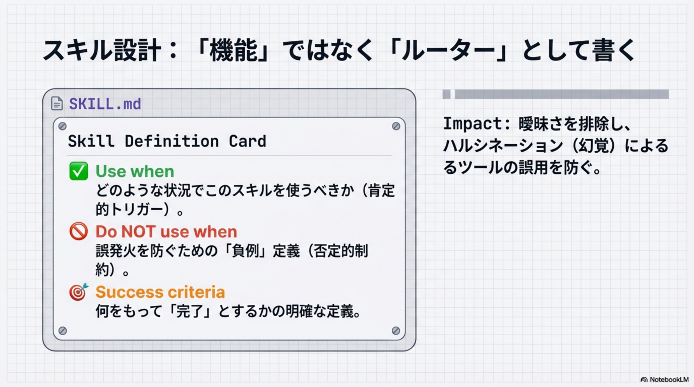
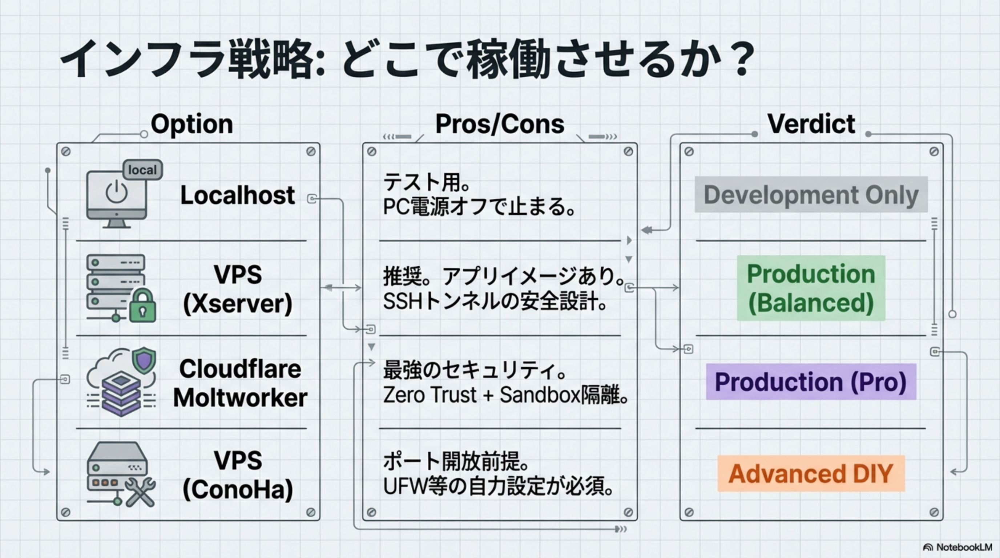

概要
Cron + Heartbeat
Soul / Working / Memory
セルフホスト対応
最初の30分で稼働
パラダイムシフト：プロンプト待ちから自律駆動へ
| 特性 | Traditional AI (ChatGPT/Claude) | The OpenClaw Way |
|---|---|---|
| 状態管理 | ステートレス (Stateless) | 永続的 (Persistent) |
| 動作モード | 受動的 (Passive) | 能動的 (Active) |
| セッション | 単一セッション (Isolated) | 環境認識 (Environment Aware) |
| 起動トリガー | 人間が開始 (Human Initiated) | ループ実行 (Loop-based) |
エコシステム：Engine + Cockpit

🖥 3層アーキテクチャ
UI Layer: ClawSuite（Dashboard, Terminal, Orchestration）
Logic Layer: Agents（Brain & Capabilities）+ Skill, Tools, Memory
Infrastructure Layer: OpenClaw Gateway（Localhost Daemon）
100%オープンソース、セルフホスト、テレメトリなし。Claude, GPT, Gemini, Local Llamaをタスクごとに切り替え可能。
エージェンティック・エンジニアリング：「魂」と「記憶」
SOUL.md
Identity（人格）
「あなたは誰か」を定義。AI自身による書き換えも許可（自己進化）
WORKING.md
Short-term（RAM）
現在のタスク状態。起床時に最初に読み込むワーキングメモリ
MEMORY.md
Long-term（HDD）
重要な決定、学習した教訓、永続的な知識の蓄積
運用のリズム：Cron と Heartbeat の分離
🕒 Cron（時刻ベース）
- 「時刻厳守」の定型タスク
- 09:00 朝の開発ブリーフ配信
- 18:30 日次クローズ報告
- 定期レポート・スケジュール実行
💓 Heartbeat（文脈ベース）
- 「文脈依存」の巡回・監視
- Every 15min: レビュー待ちタグ検知
- Every 15min: デッドライン確認
- 安価なモデル（Gemini Flash）で回す
信頼性とセキュリティ
📨 配送保証（Delivery）
- 「動いた」で満足しない。「届いた」までを設計する
- delivery.channel と delivery.to を明示的に定義
- Discord / Slack へのルーティング設計
🔒 Exec Approval（承認ゲート）
exec="always"で危険なコマンドをブロック- Discord通知 → 人間が Approve / Deny
- 「自律」は「勝手」ではない。便利さと安全性の両立
スキル設計：「ルーター」として書く

🔧 SKILL.md の3要素
Use when: どのような状況でこのスキルを使うべきか（肯定的トリガー）
Do NOT use when: 誤発火を防ぐための「負例」定義（否定的制約）
Success criteria: 何をもって「完了」とするかの明確な定義
曖昧さを排除し、ハルシネーション（幻覚）によるツールの誤用を防ぐ。
Use Case
自律型開発チーム
09:00 Morning Brief → 15min Heartbeat（レビュー待ち検知）→ 18:30 Daily Close。ボトルネック解消
AIプロジェクトマネージャー
会議前ブリーフ自動生成 → 決定事項をWORKING.mdに記録 → リスクレーダーで48h未着手を検知
コンテンツ運用の資産化
Chat（アイデア出し）→ Markdown Assets（LP/Ads/Docs一括生成）→ Git Sync（バージョン管理）
インフラ戦略：どこで稼働させるか？

☁️ 4つの選択肢
Localhost
テスト用。PC電源オフで停止
Development OnlyVPS (Xserver)
推奨。アプリイメージあり、SSHトンネル
Production (Balanced)Cloudflare Moltworker
最強セキュリティ。Zero Trust + Sandbox隔離
Production (Pro)VPS (ConoHa)
ポート開放前提。UFW等の自力設定が必須
Advanced DIYClaude Code vs. OpenClaw
⚡ Claude Code
The Sprinter
目的: 実装（Coding）
強み: コード生成速度、リファクタリング
役割: 「作る」ためのツール
🕒 OpenClaw
The Marathon Runner
目的: 運用（Operations）
強み: 24/7自律稼働、承認フロー、連携
役割: 「回す」ための基盤
実装チェックリスト（最初の30分）
1. Install
bind="loopback" でローカルホストのみに制限（必須）
2. Identity
SOUL.md を作成し、役割を定義する
3. Rhythm
最初のCron（朝のブリーフ）を設定
4. Safety
exec="always"（承認必須）を有効化
5. Memory
memory/ ディレクトリを作成（ファイル記憶）
6. Audit
openclaw security audit --deep を実行
The Future of Work: Agentic Engineering
エージェントから始める
ファイルに残す
堅牢にする